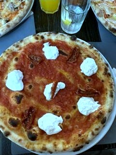
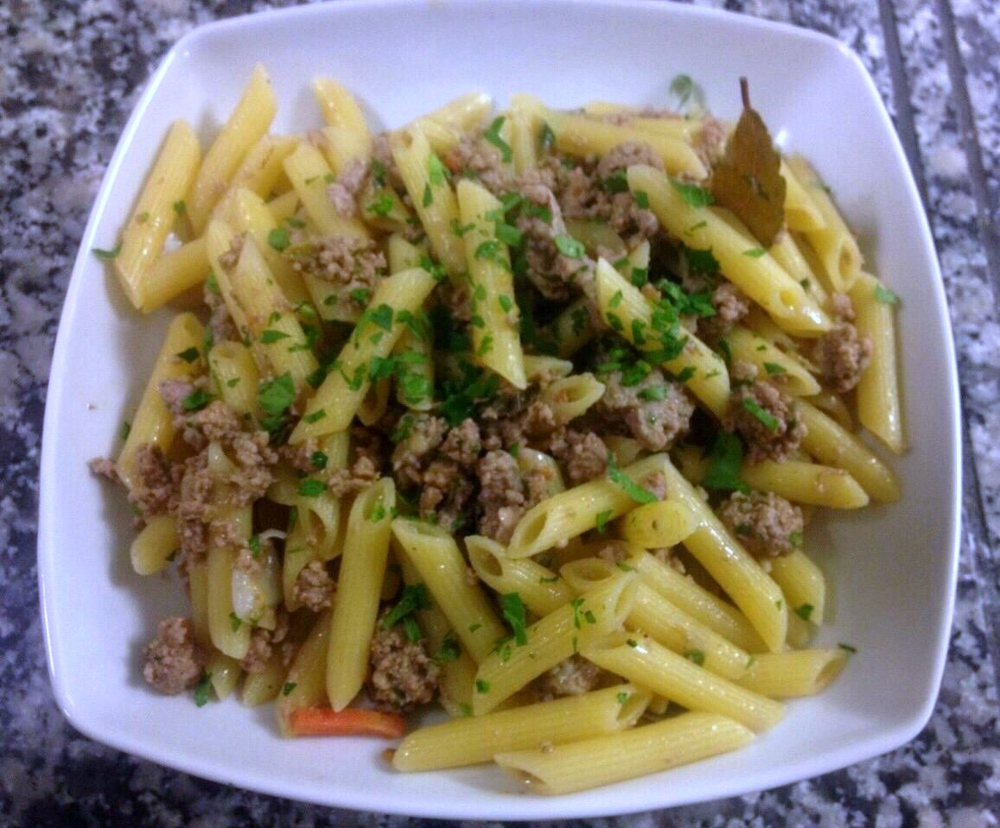
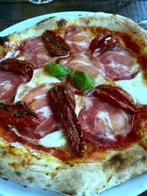
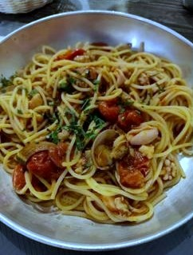
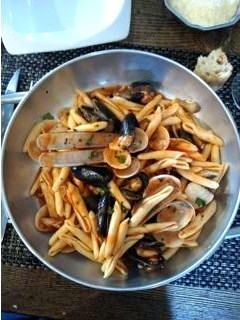
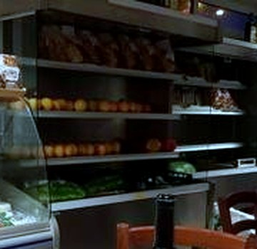
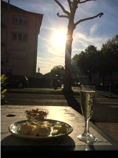
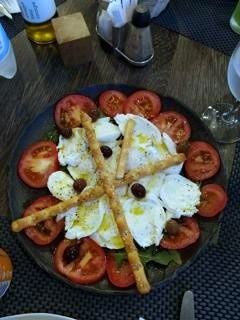
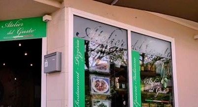

Burrata19 €
Tomate, mozzarella, dômes de burrata, tomates séchées.

↓ Découvrir
Bonnevoie, Luxembourg
Cuisine italienne du jour, au cœur de Bonnevoie.
Pas de carte imprimée : la pâte fraîche et les plats du jour changent avec ce qui est bon ce matin-là.
Horaires ci-dessous, à confirmer.
Le nom, au pied de la lettre
À Bonnevoie, la même enseigne verte annonce deux métiers : « Restaurant · Pizzeria » d'un côté de la vitrine, « Épicerie Italienne » de l'autre. C'est tout le sens du nom — un atelier où l'on cuisine, un comptoir où l'on vend, pas une carte imprimée une fois pour toutes.
Ici, la pâte fraîche et les plats du jour changent selon ce qui est bon ce matin-là. Un morceau de focaccia maison accompagne chaque repas — la seule chose qui, elle, ne change jamais.
L'atelier est tenu par Umberto Tauro.
Cuit au four
Pizzas napolitaines. Prix indicatifs (plateforme de livraison, septembre 2026) — la carte change chaque jour.

Tomate, mozzarella, dômes de burrata, tomates séchées.
Tomate, mozzarella, basilic.
Tomate, mozzarella, salami piquant.
Jambon, champignons, mozzarella.
Quatre fromages.
Saucisse italienne, stracciatella.

Vue récemment — une variation qui ne figure pas forcément sur la carte du jour.
Changeante, comme il se doit
Aucune carte imprimée pour les pâtes : la sélection change selon le jour. Vues récemment :

Palourdes — vue récemment, pas garantie chaque jour.

Moules et palourdes — vue récemment, pas garantie chaque jour.
Au four, à la traditionnelle.
Prix indicatifs (plateforme de livraison, septembre 2026), à confirmer directement — la carte du jour change.

Épicerie Italienne
Sur la même vitrine, un comptoir : pain, fromages, charcuterie, fruits, conserves et vins italiens — la partie « épicerie » de l'enseigne, à emporter comme au restaurant.
Aperitivo
Une petite terrasse pour l'aperitivo — Peroni, vins italiens, un moment avant le repas.


Prix indicatifs, à confirmer.
Bonnevoie
| Lundi | Fermé |
| Mar. – Ven. | 11h30–13h45 · 18h00–21h45 |
| Samedi | 11h45–13h45 · 18h00–21h45 |
| Dimanche | Fermé |
